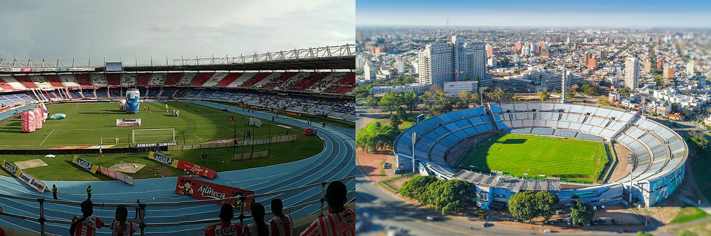

O Cruzeiro tem uma das histórias mais importantes do futebol brasileiro na Copa Libertadores. O clube conquistou a América duas vezes, em 1976 e 1997, e também foi vice-campeão em 1977 e 2009. As taças continentais ajudam a explicar por que a Raposa se consolidou como uma das camisas brasileiras de maior tradição internacional.
Cada título teve um roteiro muito diferente. Em 1976, fez uma campanha ofensiva impressionante, marcou 46 gols e venceu o River Plate em uma final de três jogos. Em 1997, o time de Paulo Autuori começou a Libertadores com três derrotas, parecia eliminado ainda na fase de grupos, mas reagiu, sobreviveu a duas decisões por pênaltis com Dida decisivo e bateu o Sporting Cristal na decisão.
A trajetória celeste na Libertadores também se conecta à tradição do clube em mata-matas nacionais. O Cruzeiro virou sinônimo de competitividade em torneios eliminatórios, algo que aparece também na história dos títulos na Copa do Brasil. No cenário continental, esse peso fica ainda maior quando a trajetória celeste é colocada dentro da história da Libertadores.
O título de 1976 fez do Cruzeiro o segundo clube brasileiro campeão da Libertadores, depois do Santos, e o único brasileiro a levantar a taça na década de 1970. O título de 1997 recolocou a Raposa no topo da América 21 anos depois, em uma campanha improvável, marcada por recuperação, pênaltis e o brilho de Dida.
A máquina celeste conquista a América
A primeira Libertadores veio em 1976, com um dos times mais fortes da história do clube. A base era formada por jogadores de enorme qualidade técnica e competitiva: Raul Plassmann no gol, Nelinho como lateral de chute poderoso, Darci Menezes e Moraes na defesa, Piazza e Zé Carlos no meio, Palhinha como artilheiro, Joãozinho como ponta desequilibrante e Jairzinho, campeão mundial pela Seleção Brasileira em 1970, como força ofensiva.
A campanha teve 13 jogos, com 11 vitórias, um empate e apenas uma derrota. O Cruzeiro marcou 46 gols, número altíssimo para uma edição, e teve Palhinha como artilheiro da competição, com 13 gols. Jairzinho também teve papel enorme, com 12 gols, formando com Palhinha e Joãozinho um trio de ataque devastador.
A campanha também teve um peso emocional forte. Durante a fase semifinal, após a goleada por 4 a 0 sobre o Alianza Lima, o atacante Roberto Batata morreu em um acidente de carro na Rodovia Fernão Dias. A tragédia abalou o clube e a torcida, mas o Cruzeiro seguiu na competição e, no jogo seguinte, aplicou 7 a 1 no mesmo Alianza Lima, em uma atuação que ficou associada à homenagem ao camisa 7.
Primeira fase:
- Cruzeiro 5 x 4 Internacional
Gols: Palhinha duas vezes, Joãozinho duas vezes e Nelinho. Gols do Internacional: Lula, Valdomiro, Zé Carlos contra e Ramón. - Sportivo Luqueño 1 x 3 Cruzeiro
Gols: Roberto Batata, Nelinho e Jairzinho. - Olimpia 2 x 2 Cruzeiro
Gols: Jairzinho e Darci Menezes. - Cruzeiro 4 x 1 Sportivo Luqueño
Gols: Palhinha duas vezes, Eduardo e Jairzinho. - Internacional 0 x 2 Cruzeiro
Gols: Jairzinho e Joãozinho. - Cruzeiro 4 x 1 Olimpia
Gols: Jairzinho duas vezes, Nelinho e Eduardo.
Fase semifinal:
- LDU 1 x 3 Cruzeiro
Gols: Palhinha duas vezes e Joãozinho. - Alianza Lima 0 x 4 Cruzeiro
Gols: Roberto Batata, Joãozinho duas vezes e Jairzinho. - Cruzeiro 7 x 1 Alianza Lima
Gols: Jairzinho quatro vezes e Palhinha três vezes. - Cruzeiro 4 x 1 LDU
Gols : Nelinho, Jairzinho, Palhinha e Ronaldo.
Final:
- Cruzeiro 4 x 1 River Plate
Gols: Nelinho, Palhinha duas vezes e Valdo. Oscar Más marcou para o River Plate. - River Plate 2 x 1 Cruzeiro
Gol: Palhinha. J.J. López e González marcaram para o River Plate. - Cruzeiro 3 x 2 River Plate
Gols: Nelinho, Ronaldo e Joãozinho. Oscar Más e Urquiza marcaram para o River Plate.
Um dos maiores jogos do Mineirão
A estreia do Cruzeiro na Libertadores de 1976 foi contra o Internacional, campeão brasileiro de 1975 e algoz celeste na decisão nacional do ano anterior. O jogo aconteceu no Mineirão, em 7 de março, e entrou para a história como uma das maiores partidas já disputadas no estádio.
O Cruzeiro começou em ritmo avassalador. Palhinha marcou aos 4 e aos 10 minutos. Lula diminuiu para o Internacional, Joãozinho fez o terceiro, Valdomiro descontou antes do intervalo, e Zé Carlos acabou marcando contra no início do segundo tempo. O jogo ficou 3 a 3. Joãozinho voltou a colocar a Raposa em vantagem, Ramón empatou para os gaúchos, mas Nelinho, em cobrança de pênalti aos 40 minutos do segundo tempo, fez o gol da vitória por 5 a 4.
Aquele jogo foi mais do que uma vitória. Foi uma resposta esportiva ao campeão brasileiro, uma afirmação de força continental e um cartão de visitas da equipe. O Cruzeiro mostrava que sua Libertadores seria jogada com ataque, coragem e intensidade.
Força ofensiva e classificação com autoridade
Depois do 5 a 4 sobre o Internacional, venceu o Sportivo Luqueño por 3 a 1 no Paraguai. Em seguida, empatou por 2 a 2 com o Olimpia, também em Assunção, depois de sair perdendo por 2 a 0. Jairzinho e Darci Menezes buscaram o empate, resultado importante em uma fase de grupos muito disputada.
No returno, a Raposa acelerou. Fez 4 a 1 no Sportivo Luqueño, no Mineirão, com dois gols de Palhinha, um de Eduardo e um de Jairzinho. Depois, venceu o Internacional por 2 a 0 no Beira-Rio, com gols de Jairzinho e Joãozinho. Para fechar a fase, bateu o Olimpia por 4 a 1 no Mineirão, com grande atuação ofensiva.
Terminou a primeira fase na liderança do grupo, à frente de Internacional, Olimpia e Sportivo Luqueño. A equipe já acumulava goleadas, vitórias fora de casa e uma produção ofensiva que impressionava até para os padrões da época.
Semifinal e a tragédia de Roberto Batata
Na fase semifinal, a Libertadores ainda era disputada em grupos. O Cruzeiro caiu com LDU, do Equador, e Alianza Lima, do Peru. A estreia foi em Quito, na altitude, e a Raposa venceu a LDU por 3 a 1, com dois gols de Palhinha e um de Joãozinho. Poucos dias depois, em Lima, aplicou 4 a 0 no Alianza, com gols de Roberto Batata, Joãozinho duas vezes e Jairzinho.
Foi logo após essa vitória que o Cruzeiro viveu uma das maiores dores de sua história. Roberto Batata, autor de gol naquela partida, morreu em acidente de carro ao retornar ao Brasil. A perda abalou o elenco, a torcida e o futebol mineiro. O camisa 7 era uma peça importante do grupo e tinha enorme identificação com o clube.
O Cruzeiro voltou a campo dias depois, no Mineirão, novamente contra o Alianza Lima. O resultado foi uma goleada por 7 a 1. Jairzinho marcou quatro gols, Palhinha fez três, e a partida ganhou um valor simbólico especial pela ligação com a memória de Roberto Batata. A fase foi fechada com 4 a 1 sobre a LDU, garantindo a vaga na final contra o River Plate.
Três jogos e um gol eterno de Joãozinho
A decisão de 1976 foi contra o River Plate, um dos clubes mais tradicionais da Argentina. O primeiro jogo aconteceu no Mineirão, em 21 de julho, e o Cruzeiro fez uma atuação dominante. Venceu por 4 a 1, com gols de Nelinho, Palhinha duas vezes e Valdo. Oscar Más descontou para os argentinos. O placar dava enorme vantagem moral, mas o regulamento não decidia a final por saldo de gols. Se o River vencesse a volta, haveria terceiro jogo.
Foi o que aconteceu. Em Buenos Aires, no Monumental de Núñez, o River venceu por 2 a 1. J.J. López abriu o placar, Palhinha empatou no início do segundo tempo, mas González marcou o gol da vitória argentina. Com uma vitória para cada lado, a Libertadores foi para uma partida desempate em campo neutro.
A finalíssima aconteceu em 30 de julho de 1976, no Estádio Nacional de Santiago, no Chile. Nelinho abriu o placar de pênalti. Ronaldo ampliou no segundo tempo. O River reagiu com Oscar Más e Urquiza, empatando em 2 a 2. Quando a decisão parecia caminhar para um novo drama, veio o lance eterno. Aos 43 minutos do segundo tempo, Joãozinho cobrou falta com esperteza e precisão, colocando a bola no ângulo. Cruzeiro 3 a 2. O primeiro título da Libertadores era celeste.
Destaques da campanha
Palhinha foi o grande artilheiro da campanha. Marcou 13 gols e terminou como goleador da competição. Fez gols contra Internacional, Sportivo Luqueño, LDU, Alianza Lima e River Plate. Sua regularidade foi impressionante, especialmente porque apareceu em diferentes fases da competição.
Jairzinho marcou 12 gols e deu ao ataque celeste potência, experiência e presença de área. O Furacão da Copa de 1970 teve uma Libertadores muito forte, incluindo quatro gols na goleada por 7 a 1 sobre o Alianza Lima.
Joãozinho foi o personagem do gol mais importante. Já havia sido decisivo em vários jogos, mas seu nome ficou eternizado pela cobrança de falta contra o River Plate, em Santiago. Nelinho também teve peso enorme: marcou na estreia contra o Internacional, fez gols nas finais e era uma das armas mais temidas do time pela força nas bolas paradas.
Raul Plassmann foi segurança no gol. Piazza, Zé Carlos, Eduardo, Darci Menezes, Moraes, Ronaldo, Valdo e Roberto Batata fizeram parte de uma equipe que tinha repertório, liderança e capacidade de atacar por todos os lados. Zezé Moreira comandou um time de futebol vistoso, agressivo e histórico.
A segunda taça improvável
A segunda Libertadores veio em 1997, em um roteiro completamente diferente. Se o título de 1976 foi de uma máquina ofensiva, o de 1997 foi de resistência. A Raposa começou a competição com três derrotas em três jogos e parecia praticamente eliminada na fase de grupos. Mesmo assim, venceu os três jogos seguintes, avançou ao mata-mata e construiu uma campanha de superação.
Entrou na Libertadores de 1997 após conquistar a Copa do Brasil de 1996. O grupo tinha Grêmio, Sporting Cristal e Alianza Lima. O regulamento classificava três equipes de cada chave para as oitavas, o que manteve a Raposa viva mesmo depois da largada ruim.
A campanha teve 14 jogos, com sete vitórias, um empate e seis derrotas. O Cruzeiro marcou 15 gols e sofreu 12. Os números mostram uma trajetória longe de dominante, mas extremamente competitiva no momento certo. O time teve Dida como herói em disputas de pênaltis, Marcelo Ramos como referência ofensiva, Palhinha como camisa 10, Elivélton como autor do gol do título, Wilson Gottardo como líder defensivo e Paulo Autuori como técnico responsável por reorganizar a equipe.
Fase de grupos:
- Cruzeiro 1 x 2 Grêmio
Gol: Aílton. Zé Alcino e Emerson marcaram para o Grêmio. - Alianza Lima 1 x 0 Cruzeiro
- Sporting Cristal 1 x 0 Cruzeiro
Julinho marcou para o Sporting Cristal. - Grêmio 0 x 1 Cruzeiro
Gol: Palhinha. - Cruzeiro 2 x 0 Alianza Lima
Gols: Reinaldo e Palhinha. - Cruzeiro 2 x 1 Sporting Cristal
Gols: Alex Mineiro e Reinaldo. Bonnet marcou para o Sporting Cristal.
Oitavas de final:
- El Nacional 1 x 0 Cruzeiro
- Cruzeiro 2 x 1 El Nacional
Gols: Marcelo Ramos duas vezes. Arroyo marcou para o El Nacional. Nos pênaltis, Cruzeiro 5 x 3 El Nacional.
Quartas de final:
- Cruzeiro 2 x 0 Grêmio
Gols: Elivélton e Alex Mineiro. - Grêmio 2 x 1 Cruzeiro
Gol: Fabinho. Mauro Galvão e Zé Alcino marcaram para o Grêmio.
Semifinal:
- Cruzeiro 1 x 0 Colo-Colo
Gol: Marcelo Ramos. - Colo-Colo 3 x 2 Cruzeiro
Gols: Marcelo Ramos e Cleison. Basay marcou três vezes para o Colo-Colo. Nos pênaltis, Cruzeiro 4 x 1 Colo-Colo.
Final:
- Sporting Cristal 0 x 0 Cruzeiro
- Cruzeiro 1 x 0 Sporting Cristal
Gol: Elivélton.
A campanha de 1997 começou da pior forma possível. Na estreia, perdeu por 2 a 1 para o Grêmio no Mineirão. Depois, foi ao Peru e perdeu por 1 a 0 para o Alianza Lima. Três dias depois, nova derrota: 1 a 0 para o Sporting Cristal. Após três jogos, a Raposa tinha zero ponto e um cenário desesperador.
A recuperação começou no Olímpico, contra o Grêmio. O Cruzeiro nunca havia vencido o clube gaúcho naquele estádio e precisava quebrar o tabu para seguir vivo. Logo no início do segundo tempo, Palhinha marcou de peixinho e fez 1 a 0. O resultado mudou o clima da campanha.
Na sequência, venceu o Alianza Lima por 2 a 0 no Mineirão, com gols de Reinaldo e Palhinha. Na rodada decisiva, bateu o Sporting Cristal por 2 a 1, com gols de Alex Mineiro e Reinaldo. A Raposa fez nove pontos nos três jogos finais, passou em segundo lugar no grupo e transformou uma campanha que parecia perdida em uma arrancada rumo ao bicampeonato.
O primeiro mata
Nas oitavas, o adversário foi o El Nacional, do Equador. O primeiro jogo, em Quito, terminou com vitória equatoriana por 1 a 0. Mais uma vez, o Cruzeiro precisava resolver no Mineirão.
Na volta, Marcelo Ramos marcou duas vezes e deixou a Raposa em vantagem. Mas Arroyo, já no fim, empatou a partida em 2 a 1 no tempo normal e levou a decisão para os pênaltis. Aí apareceu Dida. O goleiro defendeu a cobrança de Chalá, enquanto os jogadores celestes converteram todas as batidas. O Cruzeiro venceu por 5 a 3 nos pênaltis e avançou.
Essa classificação foi fundamental para a construção emocional do título. O Cruzeiro já havia reagido na fase de grupos, mas agora sobrevivia ao primeiro mata-mata com sofrimento, frieza e goleiro decisivo. Dida começava a se tornar o grande personagem da campanha.
Revanche contra o Grêmio
Nas quartas, reencontrou o clube gaúcho, então uma das equipes mais fortes do Brasil e campeão da Libertadores de 1995. O primeiro jogo foi no Mineirão. A Raposa venceu por 2 a 0, com gols de Elivélton e Alex Mineiro, abrindo vantagem importante no confronto.
Na volta, no Olímpico, o Grêmio venceu por 2 a 1, com gols de Mauro Galvão e Zé Alcino. Fabinho marcou para o Cruzeiro, um gol de enorme valor no agregado. A derrota não impediu a classificação, porque a Raposa passou pelo placar total de 3 a 2.
A eliminatória contra o Grêmio teve valor duplo. Além de tirar um rival brasileiro forte, o Cruzeiro superou justamente o time que havia derrotado a Raposa na estreia da competição. Era mais um sinal de que aquela Libertadores mudava de sentido a cada fase.
Batalha de Santiago e show de Dida nos pênaltis
A semifinal foi contra o Colo-Colo, do Chile, campeão da Libertadores de 1991. No Mineirão, venceu por 1 a 0, com gol de Marcelo Ramos logo no início da partida. A vantagem era pequena e a decisão ficou aberta para Santiago.
Na volta, o Cruzeiro viveu uma das partidas mais tensas de sua história continental. O Colo-Colo venceu por 3 a 2, com três gols de Basay, dois deles de pênalti. Marcelo Ramos e Cleison marcaram para o Cruzeiro. Com o agregado empatado, a vaga foi decidida nos pênaltis.
Dida voltou a ser gigante. O goleiro defendeu as cobranças de Basay e Espina. Pelo Cruzeiro, Ricardinho, Donizete, Fabinho e Marcelo Ramos converteram. A Raposa venceu a disputa por 4 a 1 e chegou à final.
A classificação em Santiago talvez tenha sido o momento mais dramático da campanha antes da final. O Cruzeiro perdeu no tempo normal, sofreu pressão, viu o adversário marcar três vezes e ainda assim encontrou a vaga nas mãos de Dida.
Empate em Lima e gol eterno de Elivélton
A final de 1997 foi contra o Sporting Cristal, adversário que já havia enfrentado na fase de grupos. O primeiro jogo aconteceu em 6 de agosto, no Estádio Nacional de Lima, e terminou 0 a 0. O empate foi valioso, especialmente porque Dida fez defesas importantes e manteve a Raposa viva para decidir no Mineirão.
A finalíssima aconteceu em 13 de agosto de 1997, diante de 95 mil torcedores no Mineirão. O jogo foi tenso. O Sporting Cristal tinha boa organização, Balerio fazia partida segura no gol peruano, e o Cruzeiro precisava encontrar espaço. Aos 30 minutos do segundo tempo, Elivélton pegou de direita, de primeira, da entrada da área. A bola ganhou efeito, venceu o goleiro e entrou. Cruzeiro 1 a 0.
O gol de Elivélton deu ao Cruzeiro o bicampeonato da Libertadores. A imagem do chute, da explosão do Mineirão e de Dida comemorando depois de mais uma noite decisiva virou patrimônio da torcida celeste.
Destaques da camapnha
Dida foi o grande herói da campanha. Defendeu pênalti contra o El Nacional, pegou duas cobranças contra o Colo-Colo e fez defesas importantes na final de ida contra o Sporting Cristal. Sua segurança foi decisiva em uma campanha de margens pequenas.
Marcelo Ramos foi a principal referência ofensiva. Marcou gols em mata-matas pesados e converteu cobrança decisiva nos pênaltis da semifinal. O atacante já vinha de protagonismo na Copa do Brasil de 1996 e reforçou seu lugar entre os grandes nomes do Cruzeiro nos anos 1990.
Elivélton entrou para a história pelo gol do título. Seu chute contra o Sporting Cristal é um dos gols mais importantes da história do clube. Palhinha foi o camisa 10 da campanha e peça-chave na reação da fase de grupos. Reinaldo e Alex Mineiro apareceram com gols importantes na arrancada. Cleison fez gol decisivo na semifinal. Fabinho, Ricardinho e Donizete deram sustentação ao meio-campo.
Wilson Gottardo, contratado para a fase de mata-mata, trouxe liderança e experiência. Paulo Autuori assumiu o time durante a competição e conseguiu reorganizar uma equipe que parecia abatida. O título de 1997 foi, acima de tudo, uma conquista de recuperação coletiva.
O palco da mística celeste
O Mineirão é personagem central dos dois títulos do Cruzeiro na Libertadores. Em 1976, o estádio recebeu a estreia histórica contra o Internacional, o 5 a 4 que até hoje aparece entre os maiores jogos da história do Gigante da Pampulha. Também foi palco de goleadas contra Sportivo Luqueño, Olimpia, Alianza Lima, LDU e River Plate.
A final de ida contra o River, vencida por 4 a 1, nasceu no Mineirão. O Cruzeiro abriu vantagem com autoridade, em uma noite de futebol ofensivo, estádio cheio e imposição técnica. Embora a taça tenha sido confirmada em Santiago, o caminho da primeira Libertadores foi construído em Belo Horizonte.
Em 1997, o Mineirão teve outro papel: foi o lugar da reconstrução. Depois das três derrotas iniciais, o Cruzeiro venceu Alianza Lima e Sporting Cristal em casa para se classificar. No mata-mata, eliminou El Nacional nos pênaltis, abriu vantagem sobre o Grêmio, venceu o Colo-Colo e recebeu a final contra o Sporting Cristal diante de mais de 95 mil torcedores.
A torcida celeste viveu as duas Libertadores de formas diferentes. Em 1976, acompanhou uma máquina ofensiva, capaz de golear e encantar. Em 1997, viveu uma campanha de tensão, recuperação e fé. Nos dois casos, o Mineirão foi mais do que cenário. Foi casa, pressão, combustível e símbolo da grandeza cruzeirense na América.
Os maiores nos títulos d
Palhinha é um dos maiores nomes da história do Cruzeiro na Libertadores. Foi artilheiro da competição com 13 gols e protagonista técnico da primeira conquista. Curiosamente, em 1997, outro Palhinha, Jorge Ferreira da Silva, também foi campeão pelo clube, usando a camisa 10 e participando de uma campanha completamente diferente.
Joãozinho é o dono de um dos gols mais importantes da história celeste. A falta contra o River Plate, em Santiago, decidiu a Libertadores de 1976 e transformou o ponta em personagem eterno. Nelinho também tem lugar especial: lateral de chute poderoso, marcou gols decisivos e abriu caminho em jogos enormes.
Jairzinho foi um reforço de impacto para 1976. Campeão mundial pela Seleção em 1970, levou força, gols e experiência ao ataque. Raul Plassmann, Piazza, Zé Carlos, Eduardo, Roberto Batata, Darci Menezes, Ronaldo e Valdo completam a galeria de nomes da primeira conquista.
Em 1997, Dida é o maior símbolo. O goleiro decidiu pênaltis, sustentou o time em momentos críticos e virou figura gigantesca da campanha. Marcelo Ramos foi o atacante de referência. Elivélton marcou o gol do título. Wilson Gottardo liderou a defesa. Nonato, Fabinho, Ricardinho, Donizete, Reinaldo, Alex Mineiro, Cleison e Paulo Autuori também têm lugar garantido nessa história.
A representatividade na história
O título de 1976 representa a afirmação internacional. A Raposa já havia encantado o Brasil em 1966, ao bater o Santos de Pelé na Taça Brasil, mas a Libertadores colocou o clube no topo da América. Foi uma conquista de ataque poderoso, futebol bem jogado e vitória sobre um gigante argentino.
O título de 1997 representa a superação. O time começou praticamente no fundo do poço, com três derrotas em três jogos, e terminou campeão.
Por isso, falar dos títulos do Cruzeiro na Libertadores é falar de dois capítulos essenciais da grandeza azul. A Raposa conquistou a América com futebol ofensivo e com drama, com craques históricos e com heróis improváveis, com Mineirão lotado e com decisões fora do Brasil. Em 1976 e 1997, não apenas levantou taças. Escreveu duas campanhas que seguem entre as mais marcantes do futebol sul-americano.